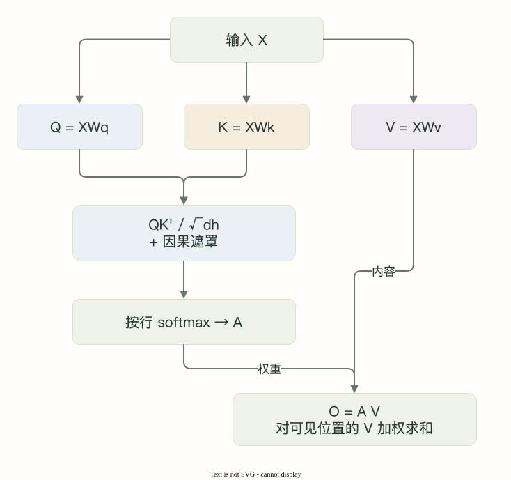

01 · 第三个位置为什么不是只选择自己？
展开逐步解析
softmax 给全部允许位置分配概率。虽然自身分数最高，前两个位置仍有非零权重；本例为 0.2483、0.2483、0.5035，输出是 V 的加权和。
先算一行注意力，再看多个头怎样共享 K/V。
输入 X 为 [B,T,D]。Q 发起匹配，K 提供匹配表示，V 提供要汇总的内容，均由可训练投影得到。

每个查询 i 对可见键 j 计算分数，归一化后对 V 加权求和。
S = Q Kᵀ / √d_h
A = softmax(S + mask，沿键位置 j 归一化)
O = A V点积除以 √d_h 控制分数尺度，避免维度增大时 softmax 过于尖锐。
取 Q=K=V，三位置向量为 (1,0)、(0,1)、(1,1)。位置0权重为 [1,0,0]；位置1为 [0.3302,0.6698,0]。
| 查询位置 | 可见分数（已缩放） | 注意力权重 | 加权输出 |
|---|---|---|---|
| 0 | [0.7071] | [1] | [1,0] |
| 1 | [0,0.7071] | [0.3302,0.6698] | [0.3302,0.6698] |
| 2 | [0.7071,0.7071,1.4142] | [0.2483,0.2483,0.5035] | [0.7517,0.7517] |
第三行输出为权重对三个 V 的加权和。此例为方便手算令 Q/K/V 相同，实际投影通常不同。
先把未来分数设为 −∞，再沿键维做 softmax，使屏蔽项为0、可见权重和为1。
scores = q @ k.transpose(-1, -2) / math.sqrt(q.shape[-1])
future = torch.ones(T, T, dtype=torch.bool).triu(1)
scores = scores.masked_fill(future, float("-inf"))
weights = scores.softmax(dim=-1)
output = weights @ v本例 future=True 表示屏蔽。使用其他 API 时核对布尔约定，并避免有效查询整行被屏蔽。
增量 Q 长度为1时，应按逻辑位置比较 键位置 ≤ 查询位置，不能套用从0开始的一行三角矩阵。
D=16、H_q=4、d_h=4 时，将 Q 重排为 [B,4,T,4]；各头独立计算，拼回D维后用 W_O 混合。
Q: [B,T,H_q·d_h] → [B,H_q,T,d_h]
K/V: [B,T,H_kv·d_h] → [B,H_kv,T,d_h]
注意力分数: [B,H_q,T_q,T_k]
拼接输出: [B,T,H_q·d_h] → W_O → [B,T,D]MHA 中每个查询头有独立 K/V，允许在不同表示子空间匹配信息。
MQA 令 H_kv=1；GQA 让一组查询头共享 KV。例如 H_q=4、H_kv=2 时，Q头0/1共享KV0，Q头2/3共享KV1。
| 方案 | H_q | H_kv | 每个 KV 组服务的查询头 |
|---|---|---|---|
| MHA | 4 | 4 | 1 |
| GQA | 4 | 2 | 2 |
| MQA | 4 | 1 | 4 |
repeat = q.shape[1] // k.shape[1]
k_expanded = k.repeat_interleave(repeat, dim=1)
v_expanded = v.repeat_interleave(repeat, dim=1)
# 再按普通多头方式计算；仅作对照，不是节省内存的生产实现本课要求 H_q 能被 H_kv 整除。repeat_interleave 用于对照计算，高效实现应避免永久复制完整缓存。
L层、B批量、T缓存长度、H_kv头、d_h维、每元素b字节时：
KV 字节 ≈ 2 × L × B × T × H_kv × d_h × b
2 表示 K 与 V 两份，不是层数或双向注意力。固定 L=24、B=1、T=4096、d_h=64、b=2，16个KV头约384 MiB，4个约96 MiB；这里只计算KV分量。
GQA 保留查询头数量，注意力分数仍按查询头计算；节约 KV 不等于消除全部长序列成本。
先作答，再展开解析。
softmax 给全部允许位置分配概率。虽然自身分数最高，前两个位置仍有非零权重；本例为 0.2483、0.2483、0.5035，输出是 V 的加权和。
沿每个查询所面对的键位置 j，即分数张量最后一维。这样每行允许键的权重和为 1，而不是在头或 batch 之间归一化。
8/2=4。本课连续分组下，0～3 使用 KV 头 0，4～7 使用 KV 头 1；最终仍有 8 个查询头输出。
不能。缓存容量或读取量只是成本的一部分，实际还取决于硬件、计算、批量、kernel 和其他内存开销。
repeat_interleave 会实际复制张量，用它对照数值很直观，但永久保存展开后的缓存会抵消共享的内存收益。
它可能是完整序列的第 1000 个位置。键可见性应依据逻辑绝对位置，而不是局部张量行号；错误重置会屏蔽大部分历史。